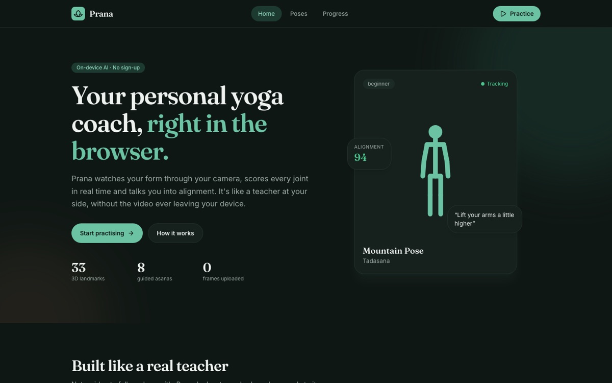

featured · full-stack + on-device ML
Prana: real-time AI yoga coach
Tracks 33 body landmarks in 3D in the browser, scores each joint against reference poses and talks you into alignment, with video never leaving the device. It measures how much space your room gives the camera and adapts each pose to fit.
- ~30 fps MediaPipe pose model on WebGL2
- FastAPI + Postgres, Alembic migrations, Argon2id auth and Google sign-in
- Hardened: CSP, CSRF checks, proxy-aware rate limits
- CI/CD: tests on SQLite and Postgres, Docker smoke test, auto-deploy